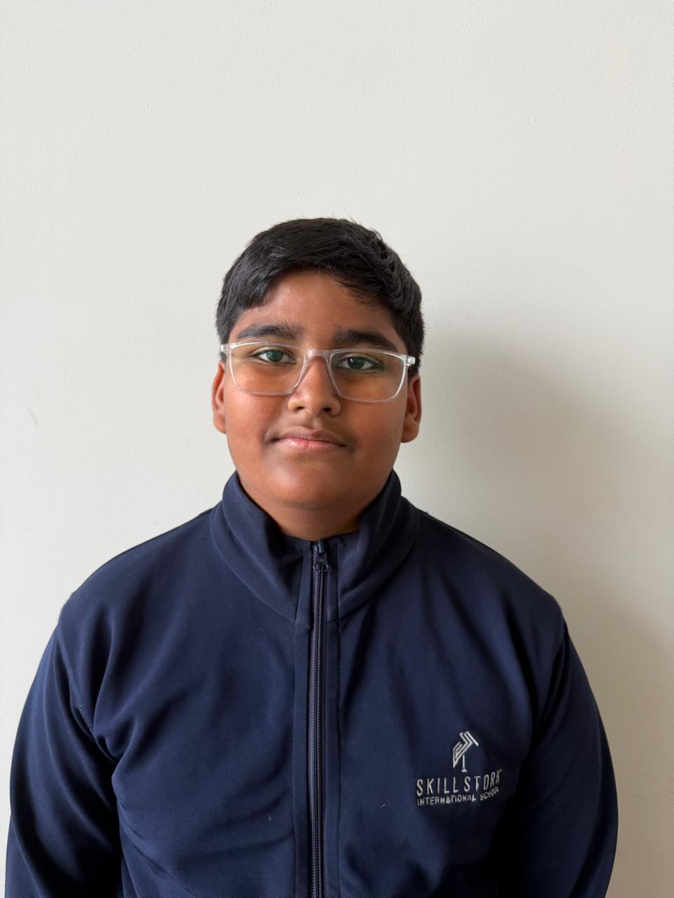
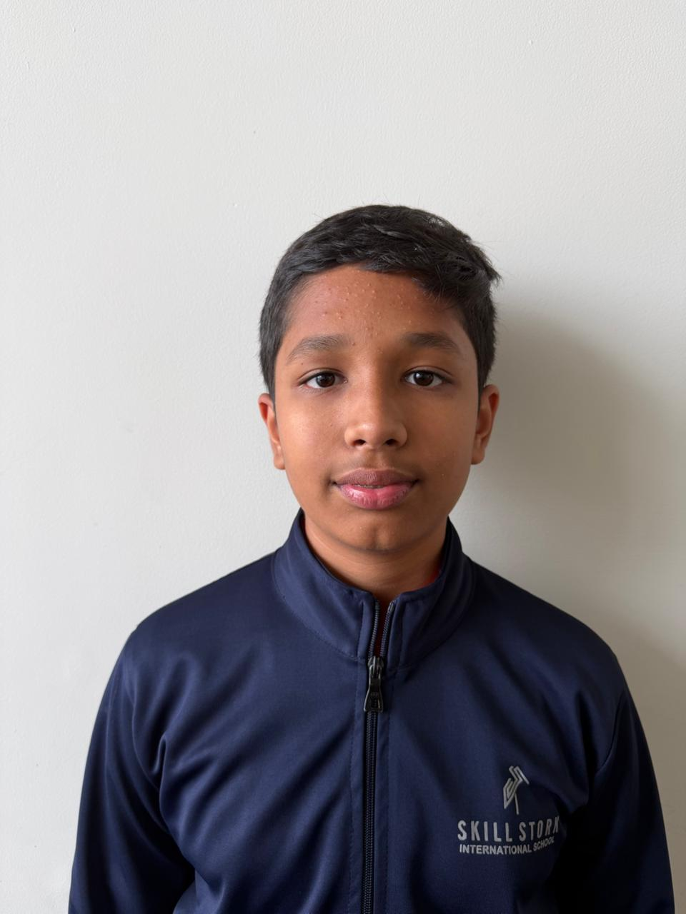
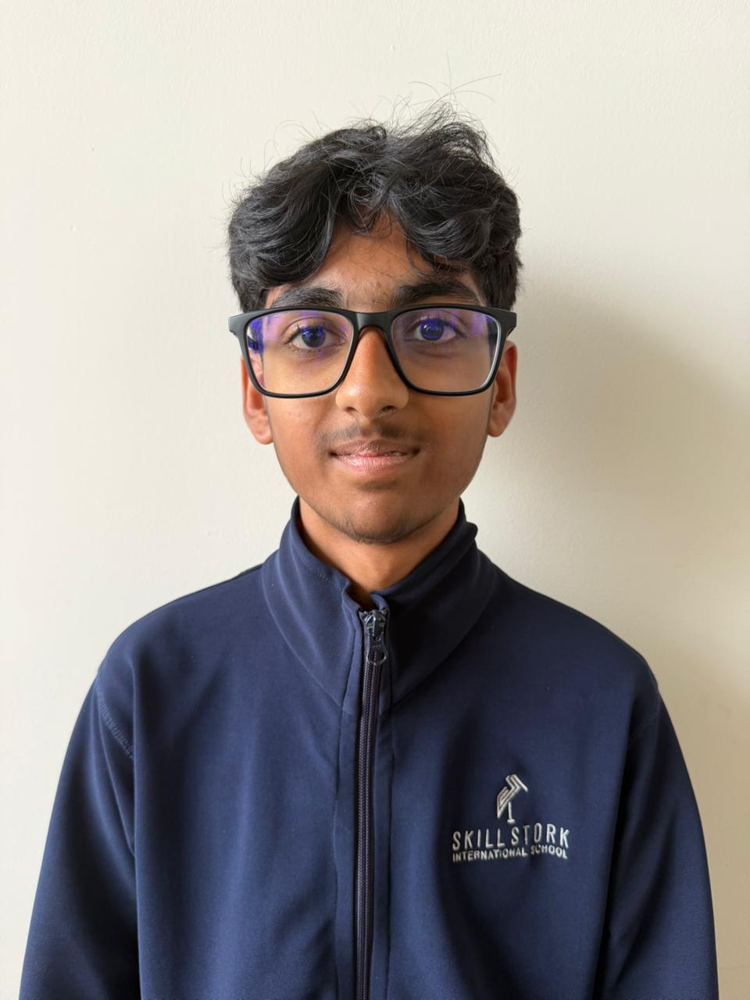
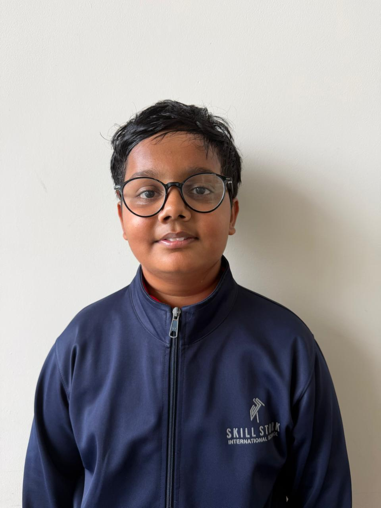
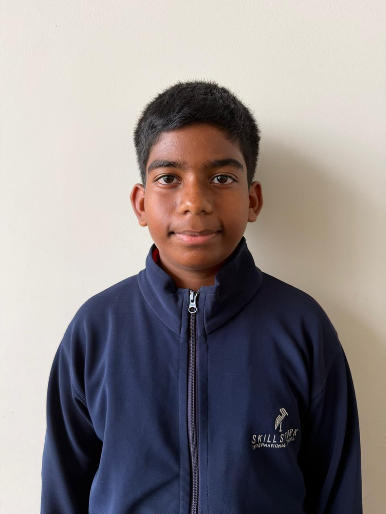
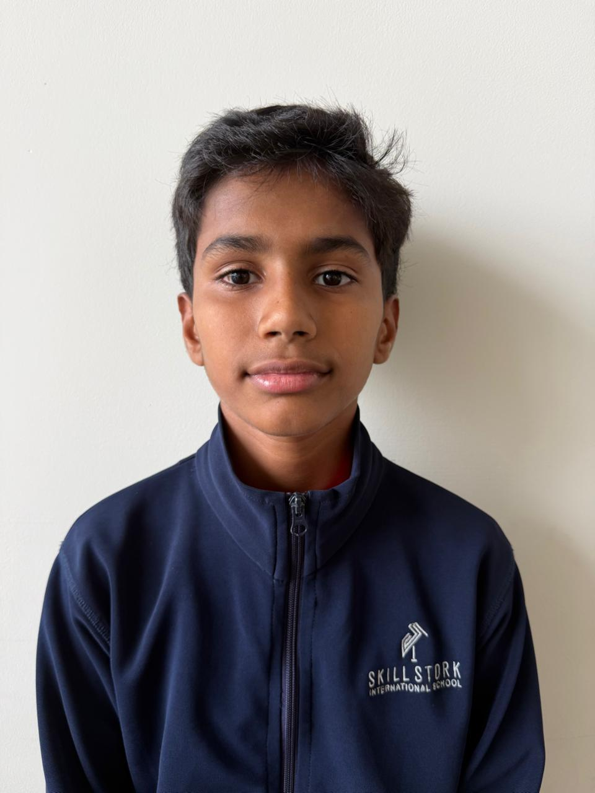

Plate2Purpose started in a school cafeteria, watching perfectly good food hit the bin, every single day. We decided to build the tool that stops it.
One platform, one mission: make sure kitchens cook for the people who are actually there, nothing more, nothing wasted.
A smart web platform that reduces food waste in schools by tracking attendance, planning meals, collecting feedback and aligning kitchen preparation with real demand.
Built to support Sustainable Development Goal 12, Responsible Consumption and Production. Our mission is to turn every meal into a meaningful action by minimising waste and maximising awareness.
Every day, schools waste food through over-preparation, poor planning and broken communication. That burns food, time, money and effort, all of it avoidable with smart technology.
Real-time attendance, dynamic meal calculation, UPI-based payment logging and a daily menu system help staff prepare exactly what's needed. Better meals, less waste, the planet wins.
Students who build, design, research and present Plate2Purpose™ and its supporting system, Optimeal.

Leads the Plate2Purpose™ and Optimeal team, managing team efforts, aligning goals and keeping the project's vision locked on reducing food waste. Turns ideas into impactful solutions.

Guides development and research, oversees project planning and coordinates collaboration, keeping every part of the team pointed at meaningful, real-world impact.

Builds Plate2Purpose™, design and functionality alike. Combines a passion for coding with a drive to solve problems like food waste, bringing creativity and purpose to every line of code.

Designs the Plate2Purpose™ experience and contributes to the research behind its mission, blending design skill with a focus on solutions for real-world issues like food waste.

Leads research and presentation for Plate2Purpose™ and Optimeal, gathering insights, structuring data and communicating the mission so it lands well-researched and impactful.

Organises information, analyses ideas and shapes how the project's vision is presented, keeping the initiative data-driven and well-communicated at every step.
Set up takes minutes. Your kitchen could be part of the mission this week.